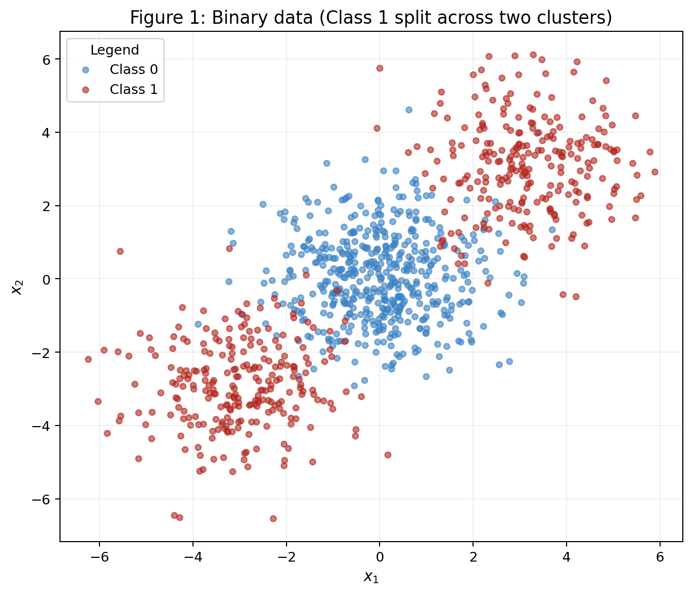
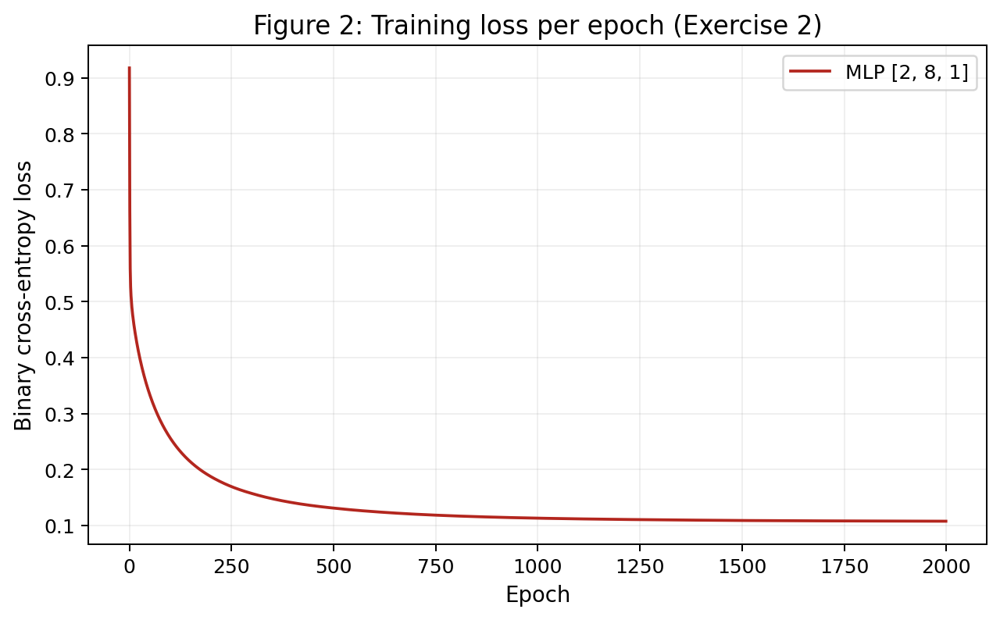
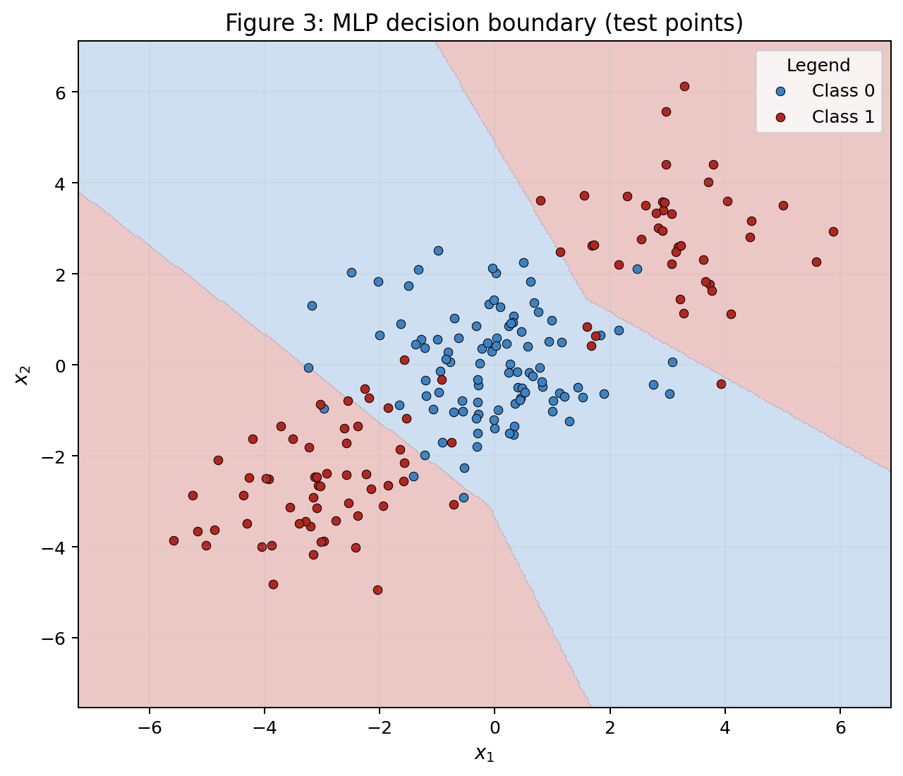
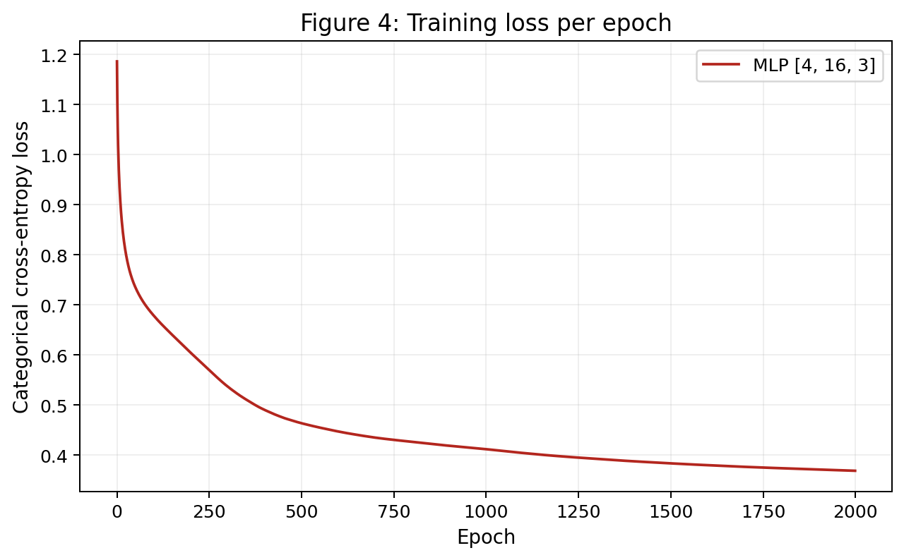
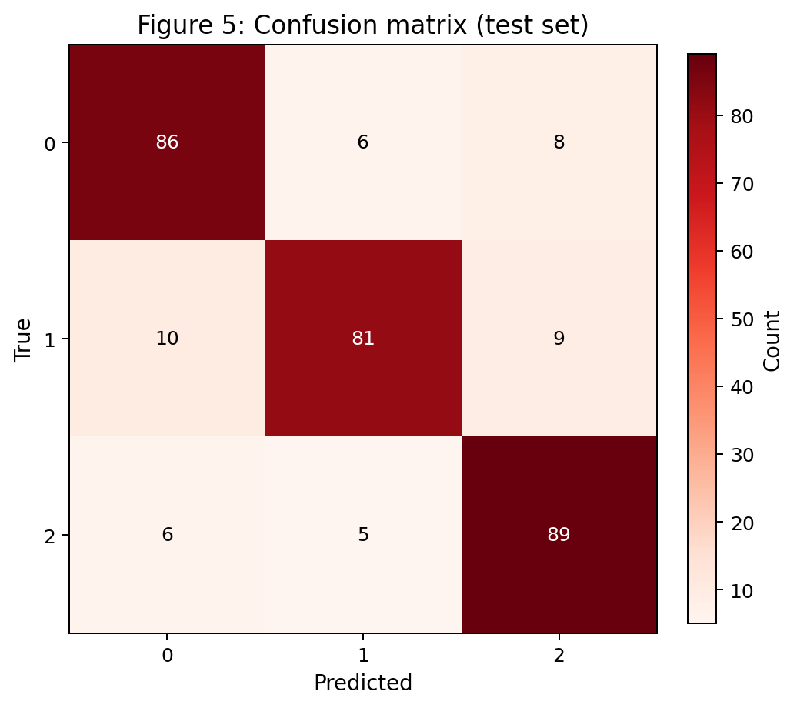
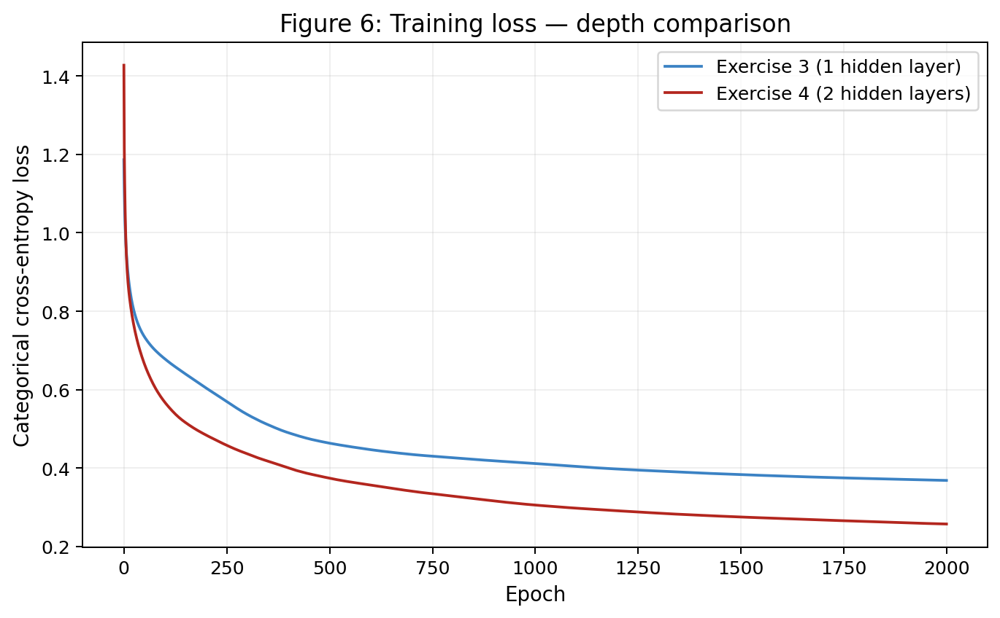

3 · MLP¶
This report follows one central question: what does a hidden layer buy us? It begins with one backpropagation step, then studies a binary problem, extends the same implementation to multiple classes, and finally tests whether adding a second hidden layer helps.
Reproducibility
The single-seed experiments create one rng = np.random.default_rng(42) and reuse it throughout the report. The multi-seed comparison uses seeds 42–46, with a fresh but identically seeded generator for each architecture so that the comparison is fair. The complete implementation for Exercises 2–4 is in mlp_activity.py.
See mlp_activity.py
from pathlib import Path
import numpy as np
import matplotlib.pyplot as plt
from sklearn.datasets import make_blobs, make_classification
from sklearn.model_selection import train_test_split
from sklearn.linear_model import LogisticRegression
from sklearn.metrics import confusion_matrix
# General Configuration
rng = np.random.default_rng(42)
LEARNING_RATE = 0.1
EPOCHS = 2000
SHALLOW_ARCHITECTURE = [4, 16, 3]
# 4 inputs, 16 neurons and 3 outputs
DEEP_ARCHITECTURE = [4, 16, 8, 3]
# shallow + hidden layer with 8 neurons
ROOT = Path(__file__).resolve().parents[1]
FIG_DIR = ROOT / "figures"
FIG_DIR.mkdir(parents=True, exist_ok=True)
plt.rcParams.update({
"figure.dpi": 150,
"savefig.dpi": 180,
"axes.titlesize": 13,
"axes.labelsize": 11,
"font.size": 10,
})
# ============================================================
# MLP from scratch: forward, backward and update all hand-written
# ============================================================
class MLP:
def __init__(self, layer_sizes, rng, output_activation="sigmoid"):
self.layer_sizes = layer_sizes
self.output_activation = output_activation
self.W, self.b = [], [] # weights and biases
# for each pair of layers: matrix of weights and biases array
for n_in, n_out in zip(layer_sizes[:-1], layer_sizes[1:]):
self.W.append(rng.normal(0, np.sqrt(2.0 / n_in), size=(n_in, n_out)))
self.b.append(np.zeros(n_out))
@staticmethod
def _relu(z): # used in the hidden layers
return np.maximum(0, z)
@staticmethod
def _relu_grad(z): # used after backpropagation
return (z > 0).astype(float)
@staticmethod
def _sigmoid(z): # used for binary classification
return 1.0 / (1.0 + np.exp(-np.clip(z, -500, 500)))
@staticmethod
def _softmax(z): # used to transform an array of values into probabilities
z = z - z.max(axis=1, keepdims=True)
e = np.exp(z)
return e / e.sum(axis=1, keepdims=True)
def forward(self, X):
"""Returns (zs, as_) pre-activations and activations per layer, as_[0] = X"""
activations = [X]
pre_activations = [] # zs
n_layers = len(self.W) # amount of transformations
a = X
for i in range(n_layers):
z = a @ self.W[i] + self.b[i] # z = a*W + b
pre_activations.append(z) # store z of each layer for backpropagation
if i < n_layers - 1: # if not on the output layer
a = self._relu(z)
else:
# for binary classification problems
if self.output_activation == "sigmoid":
a = self._sigmoid(z)
# for multiclass classification problems
else:
a = self._softmax(z)
activations.append(a)
return pre_activations, activations
# executes the forward propagation and catches the result
def predict_proba(self, X):
_, activations = self.forward(X)
return activations[-1]
# transform forwar propagation results into classes
def predict(self, X):
proba = self.predict_proba(X)
if self.output_activation == "sigmoid":
return (proba.ravel() >= 0.5).astype(int)
return proba.argmax(axis=1)
# measure the networks error
def loss(self, X, y):
proba = self.predict_proba(X)
eps = 1e-9 # numerical stability
# Binary Cross-Entropy
if self.output_activation == "sigmoid":
p = np.clip(proba.ravel(), eps, 1 - eps)
return float(-np.mean(y * np.log(p) + (1 - y) * np.log(1 - p)))
# Category Cross-Entropy: for multiclass classification it only
# gets the probability for the correct class
else:
n = X.shape[0]
p = np.clip(proba[np.arange(n), y], eps, 1.0)
return float(-np.mean(np.log(p)))
def train(self, X, y, epochs, lr):
n_layers = len(self.W)
n = X.shape[0]
history = []
# Its it's a binary classification
if self.output_activation == "sigmoid":
y_target = y.reshape(-1, 1).astype(float)
# If it's a multi-class classification: one-shot representation
else:
n_classes = self.layer_sizes[-1]
y_target = np.zeros((n, n_classes))
y_target[np.arange(n), y] = 1.0
for epoch in range(epochs): # batch gradient descent
zs, as_ = self.forward(X)
delta = (as_[-1] - y_target) / n # error for backpropagation
grads_W, grads_b = [None] * n_layers, [None] * n_layers
for i in reversed(range(n_layers)): # going backwards
a_prev = as_[i]
grads_W[i] = a_prev.T @ delta
grads_b[i] = delta.sum(axis=0)
if i > 0:
delta = (delta @ self.W[i].T) * self._relu_grad(zs[i - 1])
for i in range(n_layers):
self.W[i] -= lr * grads_W[i]
self.b[i] -= lr * grads_b[i]
history.append(self.loss(X, y))
return history
def n_params(self): # count amount of trainable params in the network
return sum(w.size for w in self.W) + sum(bi.size for bi in self.b)
# Creates a 2d mesh and the model answer the classification for each point
def decision_grid(model, X, resolution=300, margin=1.0):
x_min, x_max = X[:, 0].min() - margin, X[:, 0].max() + margin
y_min, y_max = X[:, 1].min() - margin, X[:, 1].max() + margin
xx, yy = np.meshgrid(
np.linspace(x_min, x_max, resolution),
np.linspace(y_min, y_max, resolution),
)
grid = np.c_[xx.ravel(), yy.ravel()]
preds = model.predict(grid).reshape(xx.shape)
return xx, yy, preds
# ============================================================
# Exercise 2: Binary classification a straight line cannot do
# ============================================================
def exercise_2():
centers = np.array([[0., 0.], [3., 3.], [-3., -3.]])
X, c = make_blobs(
n_samples=[500, 250, 250], centers=centers,
cluster_std=1.2, random_state=42,
)
y = (c > 0).astype(int)
X_train, X_test, y_train, y_test = train_test_split(
X, y, test_size=0.2, random_state=42, stratify=y
)
# Figure 1
fig, ax = plt.subplots(figsize=(7, 6), constrained_layout=True)
for cls, color in [(0, "#3B82C4"), (1, "#B3261E")]:
mask = y == cls
ax.scatter(X[mask, 0], X[mask, 1], s=18, alpha=0.6, color=color, label=f"Class {cls}")
ax.set_title("Figure 1: Binary data (Class 1 split across two clusters)")
ax.set_xlabel("$x_1$"); ax.set_ylabel("$x_2$")
ax.legend(title="Legend"); ax.grid(alpha=0.2)
fig.savefig(FIG_DIR / "figure1.png", bbox_inches="tight")
plt.close(fig)
# B - linear baseline
baseline = LogisticRegression()
baseline.fit(X_train, y_train)
baseline_acc = baseline.score(X_test, y_test)
# C - MLP from scratch
model = MLP([2, 8, 1], rng=rng, output_activation="sigmoid")
history = model.train(X_train, y_train, epochs=EPOCHS, lr=LEARNING_RATE)
test_acc = float(np.mean(model.predict(X_test) == y_test))
# Figure 2: loss curve
fig, ax = plt.subplots(figsize=(7, 4.3), constrained_layout=True)
ax.plot(history, color="#B3261E", label="MLP [2, 8, 1]")
ax.set_title("Figure 2: Training loss per epoch (Exercise 2)")
ax.set_xlabel("Epoch"); ax.set_ylabel("Binary cross-entropy loss")
ax.legend()
ax.grid(alpha=0.2)
fig.savefig(FIG_DIR / "figure2.png", bbox_inches="tight")
plt.close(fig)
# Figure 3: decision boundary on test points
xx, yy, preds = decision_grid(model, X)
fig, ax = plt.subplots(figsize=(7, 6), constrained_layout=True)
ax.contourf(xx, yy, preds, alpha=0.25, levels=[-0.5, 0.5, 1.5], colors=["#3B82C4", "#B3261E"])
for cls, color in [(0, "#3B82C4"), (1, "#B3261E")]:
mask = y_test == cls
ax.scatter(X_test[mask, 0], X_test[mask, 1], s=25, edgecolor="black",
linewidth=0.4, color=color, label=f"Class {cls}")
ax.set_title("Figure 3: MLP decision boundary (test points)")
ax.set_xlabel("$x_1$"); ax.set_ylabel("$x_2$")
ax.legend(title="Legend"); ax.grid(alpha=0.15)
fig.savefig(FIG_DIR / "figure3.png", bbox_inches="tight")
plt.close(fig)
return {
"baseline_acc": baseline_acc,
"test_acc": test_acc,
"architecture": [2, 8, 1],
"history": history,
"model": model,
"data": (X_train, X_test, y_train, y_test),
}
# ============================================================
# Exercise 3: Multi-class, same network
# ============================================================
def exercise_3():
X, y = make_classification(
n_samples=1500, n_features=4, n_informative=4,
n_redundant=0, n_repeated=0, n_classes=3,
n_clusters_per_class=2, class_sep=1.0, random_state=42,
)
X_train, X_test, y_train, y_test = train_test_split(
X, y, test_size=0.2, random_state=42, stratify=y
)
baseline = LogisticRegression(max_iter=1000)
baseline.fit(X_train, y_train)
baseline_acc = baseline.score(X_test, y_test)
model = MLP(SHALLOW_ARCHITECTURE, rng=rng, output_activation="softmax")
history = model.train(X_train, y_train, epochs=EPOCHS, lr=LEARNING_RATE)
preds = model.predict(X_test)
test_acc = float(np.mean(preds == y_test))
# Figure 4: loss curve
fig, ax = plt.subplots(figsize=(7, 4.3), constrained_layout=True)
ax.plot(history, color="#B3261E", label="MLP [4, 16, 3]")
ax.set_title("Figure 4: Training loss per epoch")
ax.set_xlabel("Epoch"); ax.set_ylabel("Categorical cross-entropy loss")
ax.legend()
ax.grid(alpha=0.2)
fig.savefig(FIG_DIR / "figure4.png", bbox_inches="tight")
plt.close(fig)
# Figure 5: confusion matrix
cm = confusion_matrix(y_test, preds)
fig, ax = plt.subplots(figsize=(5.6, 5), constrained_layout=True)
im = ax.imshow(cm, cmap="Reds")
ax.set_title("Figure 5: Confusion matrix (test set)")
ax.set_xlabel("Predicted"); ax.set_ylabel("True")
ax.set_xticks(range(3)); ax.set_yticks(range(3))
for i in range(3):
for j in range(3):
ax.text(j, i, str(cm[i, j]), ha="center", va="center",
color="white" if cm[i, j] > cm.max() / 2 else "black")
fig.colorbar(im, ax=ax, fraction=0.046, label="Count")
fig.savefig(FIG_DIR / "figure5.png", bbox_inches="tight")
plt.close(fig)
most_confused = None
best = -1
for i in range(3):
for j in range(3):
if i != j and cm[i, j] > best:
best = cm[i, j]
most_confused = (i, j)
return {
"baseline_acc": baseline_acc,
"test_acc": test_acc,
"architecture": SHALLOW_ARCHITECTURE,
"history": history,
"confusion_matrix": cm,
"most_confused": most_confused,
"model": model,
"data": (X_train, X_test, y_train, y_test),
}
# ============================================================
# Exercise 4: Does a second hidden layer help?
# ============================================================
def exercise_4(ex3_data):
X_train, X_test, y_train, y_test = ex3_data
model = MLP(DEEP_ARCHITECTURE, rng=rng, output_activation="softmax")
history = model.train(X_train, y_train, epochs=EPOCHS, lr=LEARNING_RATE)
preds = model.predict(X_test)
test_acc = float(np.mean(preds == y_test))
return {
"test_acc": test_acc,
"architecture": DEEP_ARCHITECTURE,
"history": history,
"model": model,
"n_params": model.n_params(),
}
def multi_seed_comparison(seeds=(42, 43, 44, 45, 46)):
"""Average test accuracy of Ex.3 (1 hidden layer) vs Ex.4 (>=2 hidden
layers) over several seeds, same data/split, same training budget."""
X, y = make_classification(
n_samples=1500, n_features=4, n_informative=4,
n_redundant=0, n_repeated=0, n_classes=3,
n_clusters_per_class=2, class_sep=1.0, random_state=42,
)
X_train, X_test, y_train, y_test = train_test_split(
X, y, test_size=0.2, random_state=42, stratify=y
)
shallow_accs, deep_accs = [], []
shallow_losses, deep_losses = [], []
for seed in seeds:
r = np.random.default_rng(seed)
m_shallow = MLP(SHALLOW_ARCHITECTURE, rng=r, output_activation="softmax")
h_shallow = m_shallow.train(X_train, y_train, epochs=EPOCHS, lr=LEARNING_RATE)
shallow_accs.append(np.mean(m_shallow.predict(X_test) == y_test))
shallow_losses.append(h_shallow[-1])
r2 = np.random.default_rng(seed)
m_deep = MLP(DEEP_ARCHITECTURE, rng=r2, output_activation="softmax")
h_deep = m_deep.train(X_train, y_train, epochs=EPOCHS, lr=LEARNING_RATE)
deep_accs.append(np.mean(m_deep.predict(X_test) == y_test))
deep_losses.append(h_deep[-1])
return {
"shallow_mean_acc": float(np.mean(shallow_accs)),
"deep_mean_acc": float(np.mean(deep_accs)),
"shallow_mean_loss": float(np.mean(shallow_losses)),
"deep_mean_loss": float(np.mean(deep_losses)),
"shallow_accs": [float(acc) for acc in shallow_accs],
"deep_accs": [float(acc) for acc in deep_accs],
"seeds": seeds,
}
if __name__ == "__main__":
print("=== EXERCISE 2 ===")
r2 = exercise_2()
print(f"Linear baseline test accuracy: {r2['baseline_acc']:.4f}")
print(f"MLP architecture: {r2['architecture']}, test accuracy: {r2['test_acc']:.4f}")
print("\n=== EXERCISE 3 ===")
r3 = exercise_3()
print(f"Linear baseline test accuracy: {r3['baseline_acc']:.4f}")
print(f"MLP architecture: {r3['architecture']}, test accuracy: {r3['test_acc']:.4f}")
print(f"Confusion matrix:\n{r3['confusion_matrix']}")
print(f"Most confused pair (true, pred): {r3['most_confused']}")
print("\n=== EXERCISE 4 ===")
ex3_data = r3["data"]
r4 = exercise_4(ex3_data)
print(f"Deep MLP architecture: {r4['architecture']}, test accuracy: {r4['test_acc']:.4f}")
print(f"Ex.3 params: {r3['model'].n_params()}, Ex.4 params: {r4['n_params']}")
print(f"Ex.3 final train loss: {r3['history'][-1]:.4f}")
print(f"Ex.4 final train loss: {r4['history'][-1]:.4f}")
# Figure 6: both loss curves
fig, ax = plt.subplots(figsize=(7.5, 4.6), constrained_layout=True)
ax.plot(r3["history"], label="Exercise 3 (1 hidden layer)", color="#3B82C4")
ax.plot(r4["history"], label="Exercise 4 (2 hidden layers)", color="#B3261E")
ax.set_title("Figure 6: Training loss (depth comparison)")
ax.set_xlabel("Epoch"); ax.set_ylabel("Categorical cross-entropy loss")
ax.legend(); ax.grid(alpha=0.2)
fig.savefig(FIG_DIR / "figure6.png", bbox_inches="tight")
plt.close(fig)
print("\n=== MULTI-SEED COMPARISON (Ex.3 vs Ex.4) ===")
comp = multi_seed_comparison()
print(comp)
print(f"Mean accuracy difference (Ex.4 - Ex.3): {comp['deep_mean_acc'] - comp['shallow_mean_acc']:.4f}")
Exercise 1¶
One Step of Backpropagation¶
The network has 2 inputs, one hidden layer with 2 neurons, and one output neuron. Both layers use \(\tanh\), and the loss for the single sample is
The given values are
A — Forward pass¶
The hidden pre-activations are
Applying \(\tanh\) elementwise gives
The output pre-activation and prediction are
Therefore,
B — Backward pass¶
Starting at the loss,
Since \(\frac{d}{du}\tanh(u)=1-\tanh^2(u)\),
For the output layer,
Propagating the gradient into the hidden layer,
The hidden-layer gradients are therefore
C — Parameter update¶
Gradient descent applies \(\theta\leftarrow\theta-\eta\nabla_\theta L\) with \(\eta=0.3\). For the output layer,
For the hidden layer,
A second forward pass with the updated parameters gives \(L_{\text{new}}=0.0834\), down from \(0.4004\). The loss decreases because the update moves every parameter in the negative-gradient direction, which is the local direction of steepest decrease.
Exercise 2¶
Binary Classification a Straight Line Cannot Do¶
A — Generate the data¶
The dataset contains 1,000 two-dimensional samples generated with the required centers \([0,0]\), \([3,3]\), and \([-3,-3]\), cluster_std=1.2, and random_state=42. The center cluster is Class 0, while the two outer clusters together form Class 1. The data is split into 80% training and 20% test samples with stratification.

B — Establish the baseline¶
A logistic-regression baseline trained on the training set reaches 47.50% test accuracy. A linear classifier produces only one half-plane per class, so it cannot place both outer Class-1 clusters on the same side without also capturing much of the central Class-0 cluster.
C — Implement the MLP¶
The MLP class implements the forward pass, binary cross-entropy, all backward-pass gradients, and parameter updates directly with NumPy. Its layer sizes are constructor arguments, allowing the same class and the same forward and train methods to be reused in the remaining exercises.
The binary architecture is [2, 8, 1]: 2 inputs, 8 hidden ReLU units, and one sigmoid output. With a learning rate of 0.1 and 2,000 full-batch epochs, it reaches 92.50% test accuracy.


D — Analysis¶
Figure 3 shows why the MLP succeeds where the baseline fails. Its Class-1 region bends around the central cloud, covering both the upper-right and lower-left clusters while retaining a diagonal central region for Class 0. Those two outer regions cannot be represented by a single straight boundary. Each hidden ReLU unit contributes a linear segment, and their composition forms the piecewise-linear boundary needed for this geometry. This raises test accuracy from 47.50% to 92.50%.
Exercise 3¶
Multi-Class, Same Network¶
A — Generate the data¶
The required make_classification configuration generates 1,500 samples with 4 informative features, 3 classes, and 2 clusters per class, for a total of 6 clusters. The data uses class_sep=1.0 and random_state=42, followed by the same stratified 80/20 split.
B — Adapt the network¶
The output layer now has 3 units. For logits \(\mathbf{u}\), softmax produces
and categorical cross-entropy for one-hot targets is
The softmax Jacobian is
where \(\delta_{ik}\) is 1 when \(i=k\) and 0 otherwise. Applying the chain rule,
because a one-hot target satisfies \(\sum_i y_i=1\). Therefore,
This has the same prediction-minus-target form as sigmoid plus binary cross-entropy. Consequently, the core forward, backward, and update code from Exercise 2 is reused unchanged; only the output activation, loss, output size, and hyperparameters are selected through arguments.
C — Train and evaluate¶
The architecture is [4, 16, 3], trained for 2,000 epochs with a learning rate of 0.1. It reaches 85.33% test accuracy. The logistic-regression baseline on the same split reaches 66.33%.


D — Analysis¶
The most confused unordered class pair is Classes 0 and 1. The largest individual off-diagonal cell is true Class 1 predicted as Class 0, with 10 samples; the reverse direction contains 6 errors. Class 1 is also predicted as Class 2 in 9 cases.
The dataset contains six clusters distributed across only four informative dimensions with moderate separation. A linear softmax classifier can only partition the space with linear surfaces, which produces the 66.33% baseline. The hidden layer combines multiple linear pieces and can allocate different regions to the two clusters belonging to each class, improving accuracy to 85.33%. The confusion matrix demonstrates that some overlap remains without requiring assumptions about the unobserved positions of individual cluster centers.
Exercise 4¶
Does a Second Hidden Layer Help?¶
The comparison uses the same Exercise-3 dataset, split, learning rate, epoch count, and first hidden-layer width. The only architectural change is an additional hidden layer.
A — Train the deeper network¶
The deeper architecture is [4, 16, 8, 3], containing two hidden layers. With the same 2,000 epochs and learning rate of 0.1, its single-run test accuracy is 84.00%.
B — Compare¶

| Model | Hidden layers | Parameters | Final train loss | Test accuracy |
|---|---|---|---|---|
Exercise 3: [4, 16, 3] |
1 | 131 | 0.3686 | 85.33% |
Exercise 4: [4, 16, 8, 3] |
2 | 243 | 0.2575 | 84.00% |
Across five seeds (42–46), using the same data, split, learning rate, and training budget for both architectures, the shallow network averages 84.40%, while the deeper network averages 85.20%. The difference is +0.80 percentage points for the deeper model, small relative to the variation across runs. On the main single-seed run, the deeper model instead performs 1.33 percentage points worse.
C — Analysis¶
The deeper model obtains a lower training loss but does not produce a reliable test-accuracy gain. With six clusters and four informative features, one hidden layer with 16 ReLU units already has enough piecewise-linear capacity for the useful structure. The second layer increases the parameter count from 131 to 243 and can fit the training set more closely, but it also makes optimization more complex and adds capacity that does not consistently generalize.
The single-run and multi-seed results therefore support the same conclusion: depth does not meaningfully help on this dataset. Additional depth is more likely to pay off when the data contains hierarchical or compositional structure—for example, images in which edges combine into shapes and shapes combine into objects—because successive layers can reuse increasingly abstract features.
Results summary¶
| # | Quantity | Value |
|---|---|---|
| 1 | Ex. 1 — \(\mathbf{z}^{(1)}\) and \(\mathbf{h}^{(1)}\) | \(\mathbf{z}^{(1)}=[0.2700,-0.1800]\), \(\mathbf{h}^{(1)}=[0.2636,-0.1781]\) |
| 2 | Ex. 1 — \(u^{(2)}\), \(\hat y\), and \(L\) | \(u^{(2)}=0.3852\), \(\hat y=0.3672\), \(L=0.4004\) |
| 3 | Ex. 1 — all updated parameters | \(\mathbf{W}^{(2)}=[0.5866,-0.3585]\), \(b^{(2)}=0.5284\), \(\mathbf{W}^{(1)}=\begin{bmatrix}0.3764&-0.1306\\0.1523&0.4191\end{bmatrix}\), \(\mathbf{b}^{(1)}=[0.2528,-0.2954]\) |
| 4 | Ex. 2 — linear baseline test accuracy | 47.50% |
| 5 | Ex. 2 — architecture and test accuracy | [2, 8, 1], 92.50% |
| 6 | Ex. 3 — architecture and test accuracy | [4, 16, 3], 85.33% |
| 7 | Ex. 3 — most-confused class pair | Classes 0–1; largest direction: true 1 → predicted 0 (10 samples) |
| 8 | Ex. 4 — architecture and test accuracy | [4, 16, 8, 3], 84.00% |
| 9 | Ex. 4 — accuracy difference against Ex. 3 | +0.80 pp over five seeds (85.20% versus 84.40%) |